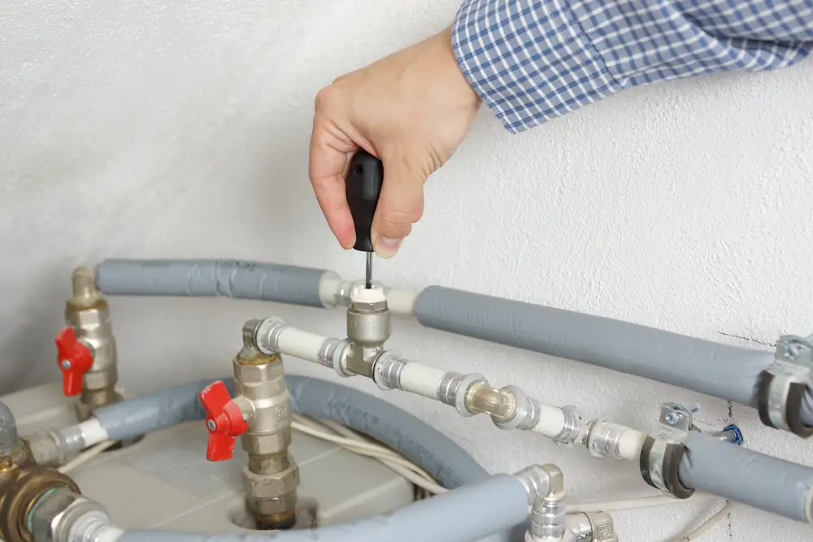

December 8, 2020
Winter weather can wreak havoc on your plumbing, especially if you have any exposed pipes or outdoor faucets. Pipes begin to freeze once the temperature reaches 20°F, leaving you at risk of serious water damage in your home. Here are some top tips for winterizing your pipes in Texarkana.
Shut Off and Drain Any Outdoor Faucets
Since you probably won’t be using your outdoor faucets for at least a few months, you should shut them off before it really starts to get cold. Locate the shut-off valve for these faucets if you haven’t already and turn the water off. Then, go outside and let the faucets run to drain all the water from the pipes.
Insulate All Exposed Pipes
Any exposed plumbing will need to be insulated from the elements, whether it’s located inside your home or garage, or outdoors. Plumbing insulation sleeves are easy to find at most hardware stores—they wrap around your plumbing and keep them from freezing in cold weather. And while professional sleeves are specifically designed for your pipes, some old towels and duct tape will work in a pinch.
Shut Off Your Water if You’re Leaving Home
Before you head out on a winter getaway, be sure to shut off all the water inside your home. Just like you did for any outdoor faucets, find your shut-off valve, shut off the water, and turn on all of your faucets to drain the water from your pipes.
Know When to Call a Plumber for Help
Frozen pipes can crack and burst, causing thousands of dollars in water damage. If your pipes are frozen, do not attempt to thaw them on your own—call a reputable plumber for assistance.
At Goff Heating/Air Conditioning & Plumbing, our goal is to help homeowners in Texarkana with their HVAC and plumbing needs. If you have questions about your home’s plumbing or need assistance with your pipes, give us a call! The sooner you have your system inspected and repaired, the lower the risk of significant damage.